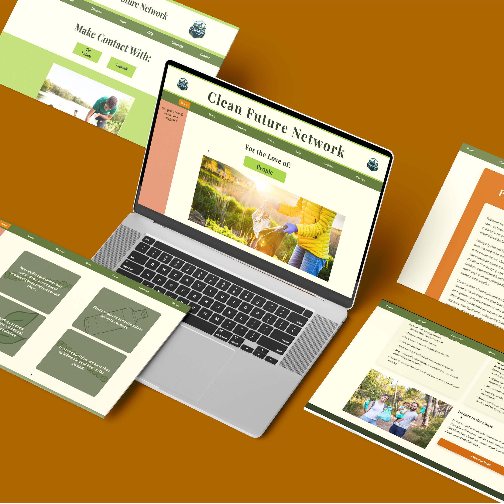
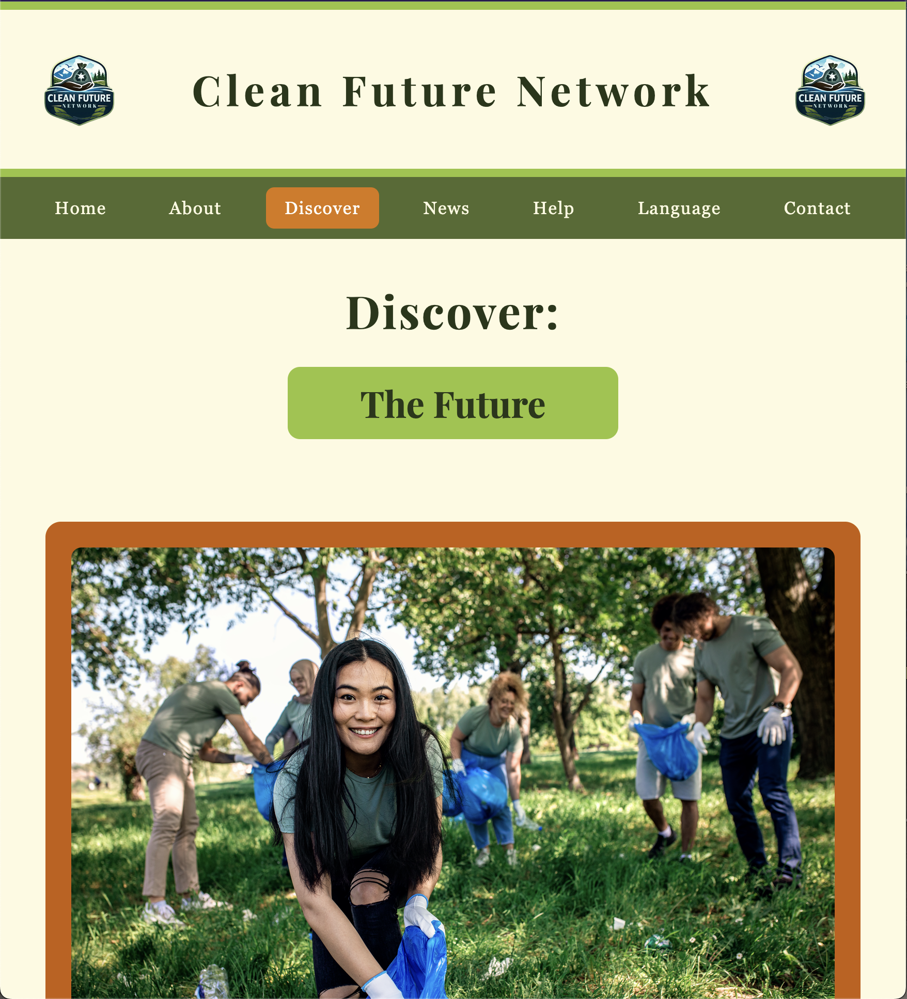

Awareness doesn't always lead to action.
People may want to help protect the environment but lack the information, resources, or community connections to know where to begin.
2026 · ACADEMIC PROJECT
Environmental Nonprofit Brand Identity & Website UX/UI Design
A more connected approach to environmental action

Figma
Adobe Photoshop
Adobe Dreamweaver
HTML / CSS
JavaScript
Brand Designer
UX/UI Designer
Web Designer
Independent Class Project
Brand Identity
Logo Design
Information Architecture
Website UX/UI
Interactive Features
Website Development
Envato Elements
Licensed assets and mockups
A CONCEPTUAL NONPROFIT BRAND & WEBSITE
Turning environmental awareness into meaningful action.
Clean Future Network is a conceptual environmental nonprofit designed to make nature conservation and community cleanup more approachable. The website brings together environmental education, sustainability resources, and opportunities for people to connect and take action.
DESIGNED FOR PEOPLE AT EVERY STAGE

PURPOSE MEETS PRACTICALITY
People may want to help protect the environment but lack the information, resources, or community connections to know where to begin.
Create a welcoming resource that organizes environmental information, highlights opportunities, and connects people with their communities.
RESEARCH, INSPIRATION & DISCOVERY
I reviewed environmental and nature-focused nonprofit websites to explore how they organize information, present educational content, and encourage community involvement. I also looked beyond the environmental space for interaction ideas, including a dynamic visitor-comment feature that inspired the homepage community panel.
Make educational resources and community information easy to find.
Use a natural visual language and welcoming community-focused content.
Give visitors reasons to explore, contribute, and get involved.
DESIGNING FOR DISCOVERY
Each page pairs a unique introductory phrase with a changing word—connecting environmental responsibility with people, nature, health, safety, and the future. The movement adds personality while inviting visitors to pause and explore.
STRUCTURE · IDENTITY · APPLICATION

Sketches established the page hierarchy, navigation, and content structure before moving into Figma.

A nature-inspired palette, typography, and imagery created a calm, approachable visual identity.

The designs were refined in Figma and developed into a multi-page website using Dreamweaver.
Licensed imagery was sourced through Envato Elements to support the themes and purpose of each page.

INDEPENDENT DEVELOPMENT
I wanted to create a polished, usable experience rather than a typical classroom assignment.
I built the website in Dreamweaver and independently explored additional techniques to bring the concept to life, including custom interactions and a layered footer. Because JavaScript wasn't covered in the course, I learned the fundamentals needed to create the rotating headline behavior.
WEBSITE DESIGN
A consistent visual system connects environmental education, news, and community resources while allowing each section to serve a distinct purpose.

THE EXPERIENCE
A walkthrough of the Clean Future Network website concept.

EXPLORE THE DESIGN
Explore the page layouts, navigation, and interactive flows of the website concept.
View Interactive Prototype ↗BRAND APPLICATION
Extending the Clean Future Network identity beyond the screen and into the community.


REFLECTION & NEXT STEPS
I personally checked the navigation and links throughout the coded website. Formal usability testing with representative visitors was outside the scope of the assignment.
Given additional time, I would test how easily first-time visitors find environmental resources, understand the rotating headlines, and discover ways to participate. I would also evaluate whether the community comment feature encourages engagement.
SMALL ACTIONS. LASTING IMPACT.
Your mission deserves a visual identity that connects.
Contact Me

DESIGNING FOR CONNECTION
02 / Community Comments
A little personality. A lot of community.
Visitors can submit comments through the Contact page and choose to have their contributions appear on the homepage. Comments cycle through the vertical panel, creating a changing snapshot of community participation.
The warm peach panel adds visual contrast while making the experience feel more personal and welcoming.